Langkah 1

Colok Doggle WIFI ke CPU
Colok Doggle WIFI ke CPU
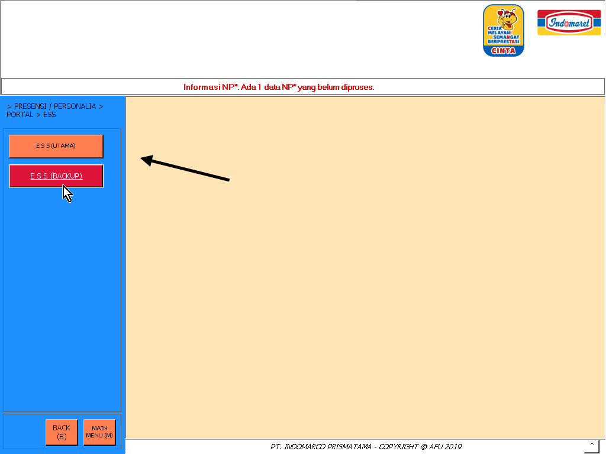
Buka ESS (Utama) atau (Backup) pilih salah satu di menu POSMAIN
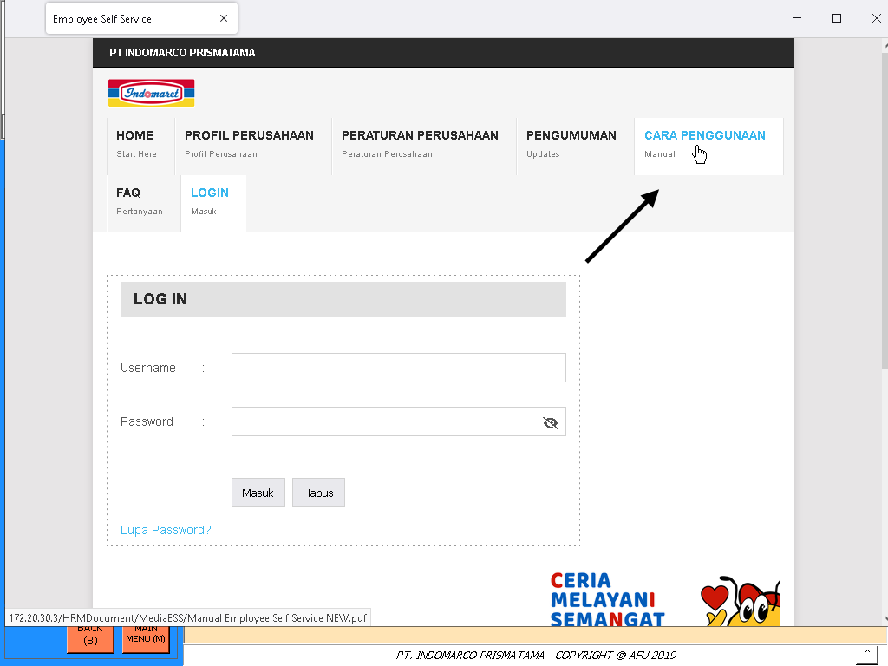
Klik CARA PENGGUNAAN
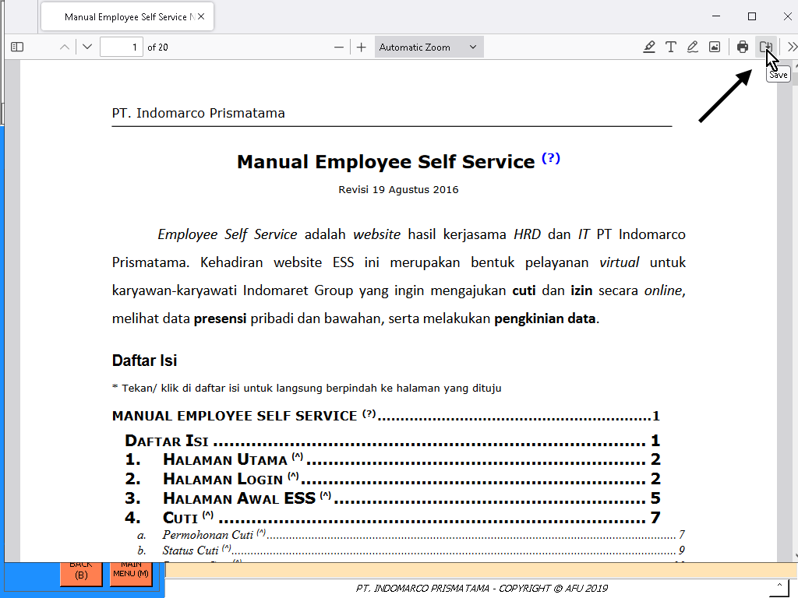
Klik ikon Save di pojok kanan atas lalu pilih "OK" jika muncul notif
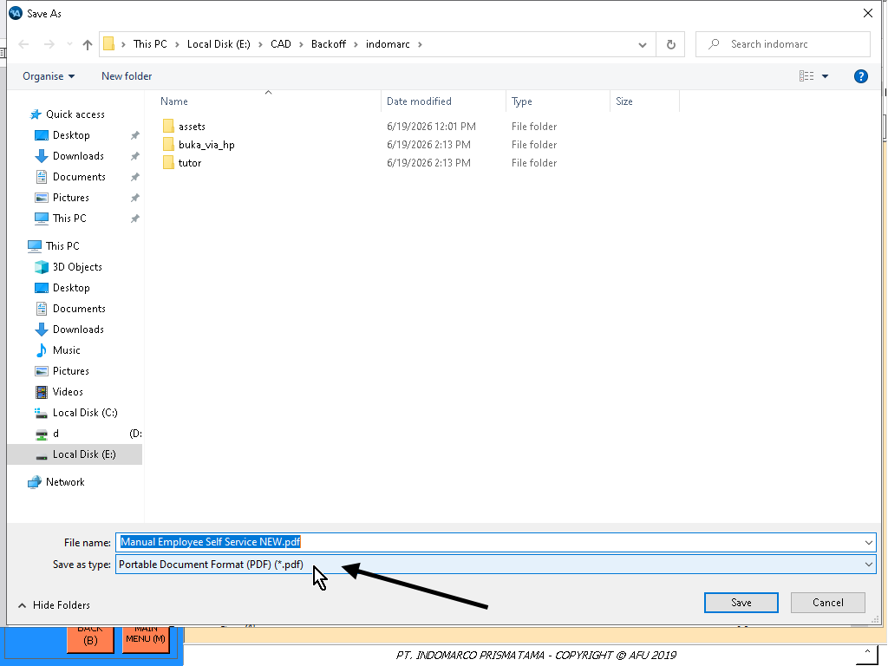
Klik pilihan Save as type
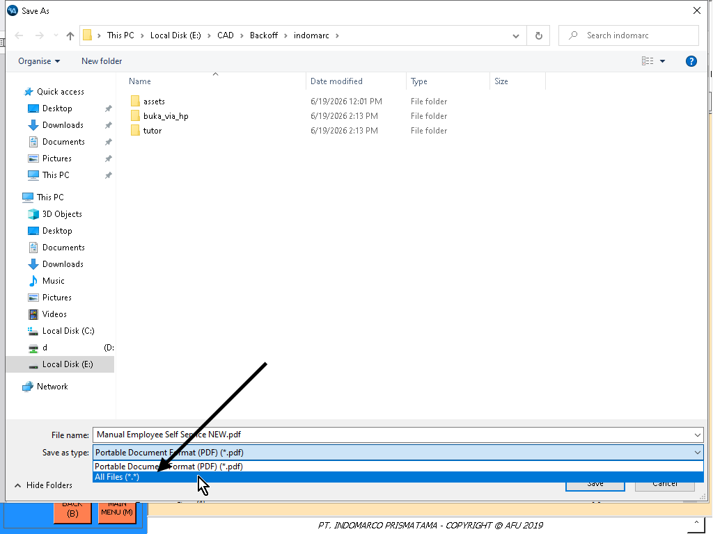
Lalu pilih All Files (*.*)
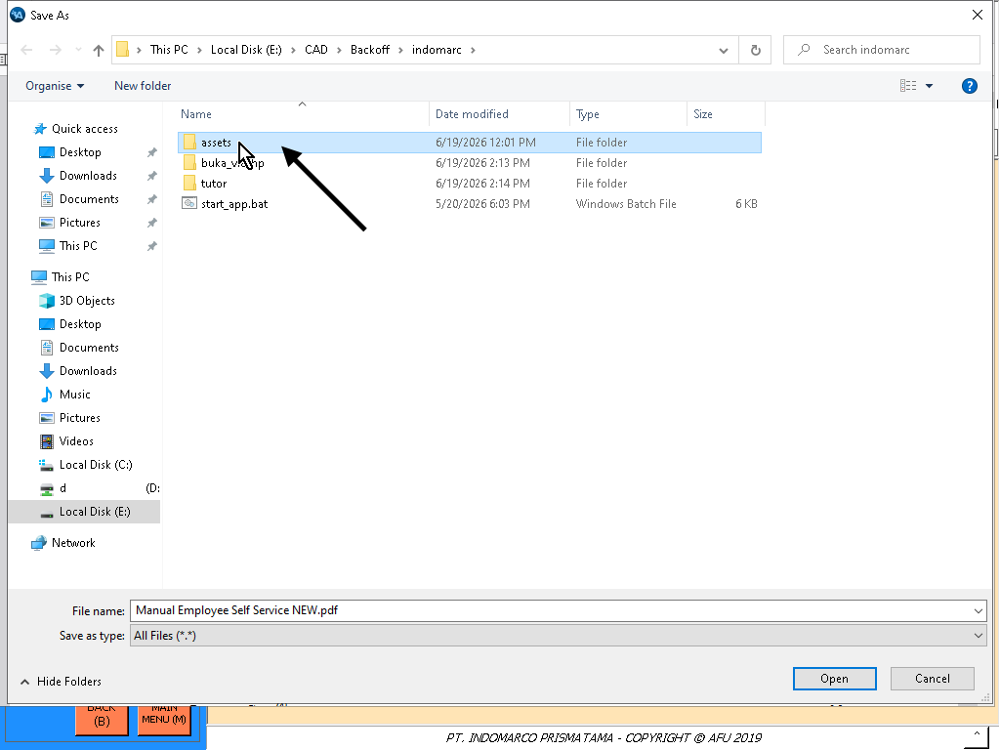
Buka folder assets
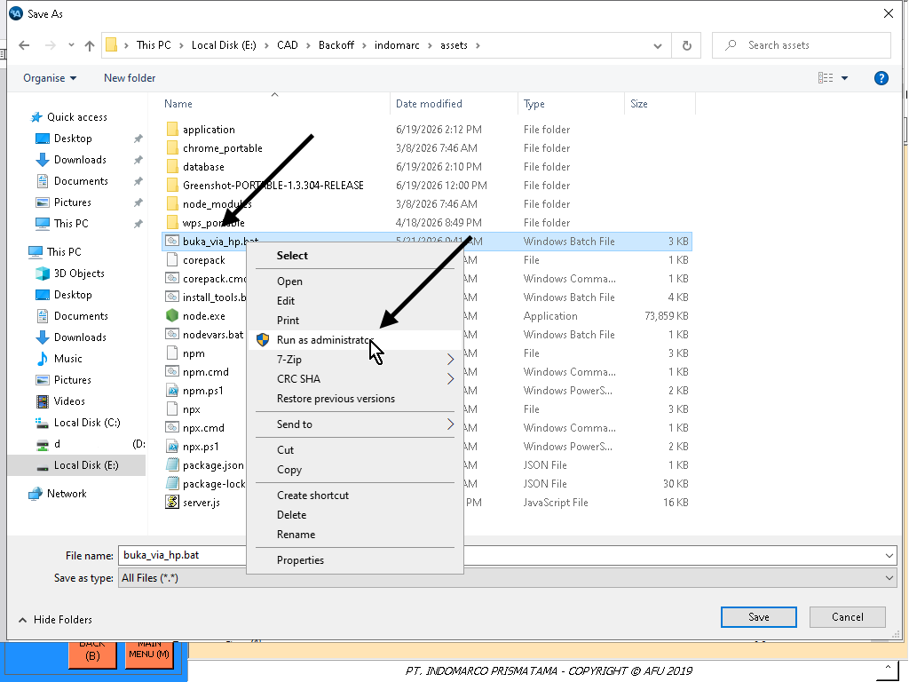
Klik kanan di file buka_via_hp.bat lalu pilih Run as administrator
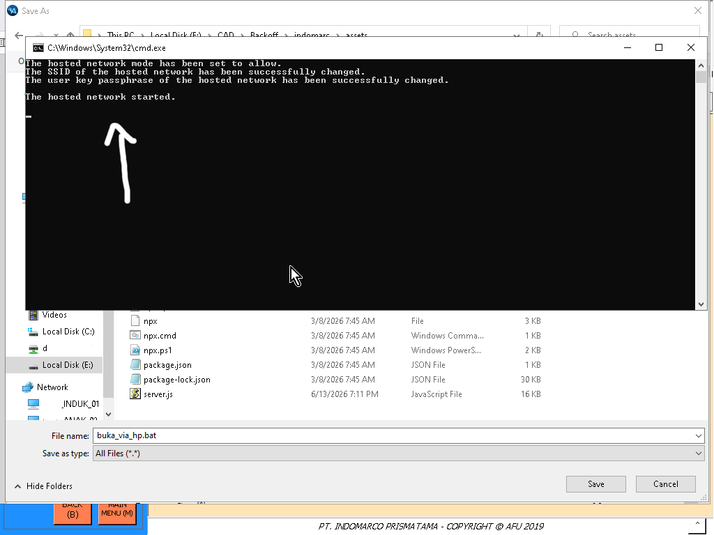
Tunggu proses menyalakan hostspot wifi, berhasil jika muncul di CMD The hosted network started
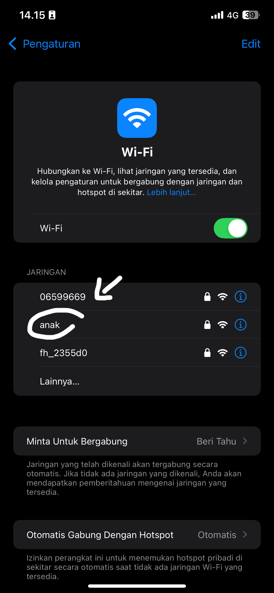
Aktifkan wifi hp lalu pilih jaringan dengan nama "anak" password nya "12345678"
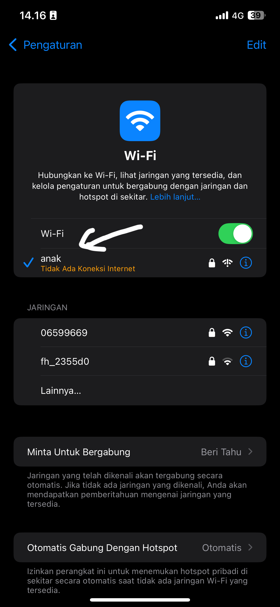
Wifi berhasil tersambung
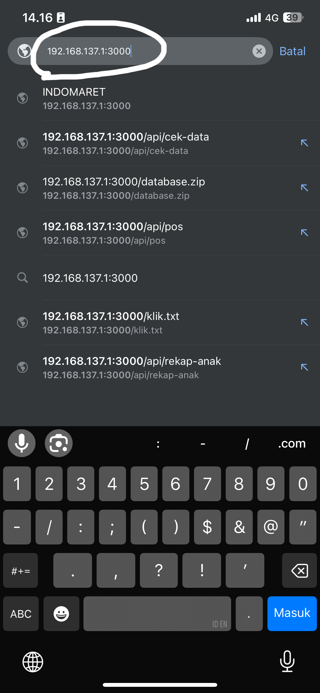
Buka browser hp lalu ketik link 192.168.137.1:3000 kemudian enter
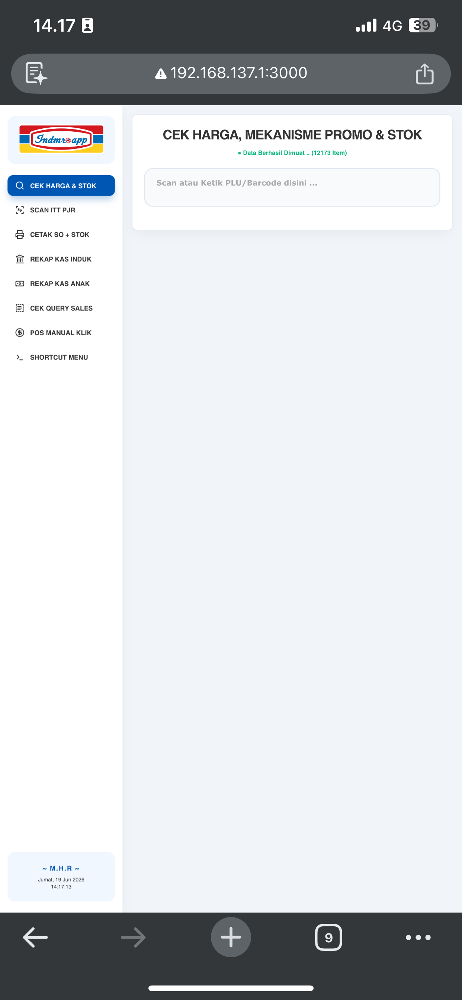
Program berhasil terbuka di HP